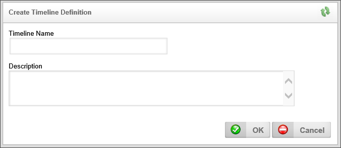
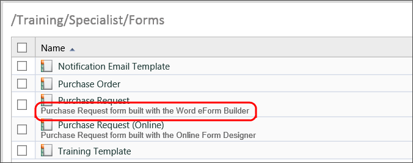

All objects are created from the Content List. A Create New dropdown menu is located at the top right of the Content List. This dropdown menu contains all of the process Director objects you can create. To create a new object, simply select the desired object from the dropdown menu.
When you select the desired object, Process Director will immediately display a Create New Object screen, that will display the Name and Description properties for the object.

The Name property is mandatory, while the Description property is optional. Once you have given the object a Name, you can click the OK button to save the Name and create the new object. If you have configured the Description property, the object's description will appear on the second line of the Content List where the object appears.

The following Content List objects are available in Process Director.
|
CONTENT LIST OBJECT |
DESCRIPTION |
|---|---|
|
Folder |
The folder is the container for all other Content List objects. |
|
Document/File |
The Content List placeholder for documents that you upload to process director for use as part of a process definition. |
|
Form Definition |
The definition of an electronic form. It stores the Form template, the fields that are created in the template, the user-defined events that are initiated while using the Form, and the validation rules for determining if the information provided in a Form is valid when submitted. |
|
Workflow Definition |
A process model that implements the traditional, flowchart-based method of modeling processes. |
|
Knowledge View |
The definition of a view of the process and/or Form data, containing user-defined fields for display in a tabular format. |
|
Business Rule |
The definition for an object that encapsulates a key decision or value used in a business process. |
|
Data Source |
An object that accesses information found in a database. |
|
Import Objects |
Implements a process to import an XML file containing an exported set of Process Director objects. |
|
DropDown Object |
The definition of labels and values that will be applied to a dropdown control on a Form. |
|
Timeline Definition |
A process model that implements the patented BP Logix method of implementing a time-based method of modeling processes. |
|
Report |
The definition of a report object that uses the advanced reporting tool. The advanced reporting tool is available to users of cloud-based installations, and on-premise installations that explicitly include the Advanced Reporting module. |
| Goal | The Goal object creates a scheduled evaluation of conditions, and, based on the evaluation, sets a global system state and/or automatically starts a process. |
| Business Value | The Business Value is an object that provides data virtualization for any accessible external data. |
| Case Definition | The Case definition stores the properties/attributes for a Case Management process. The Properties can be shared across the multiple Forms and processes that might be part of a Case. |
| Chart | The Chart provides a graphical representation for any accessible data. |
| Dashboard | The Dashboard object provides a way to display many different Process Director objects in a single interface. |